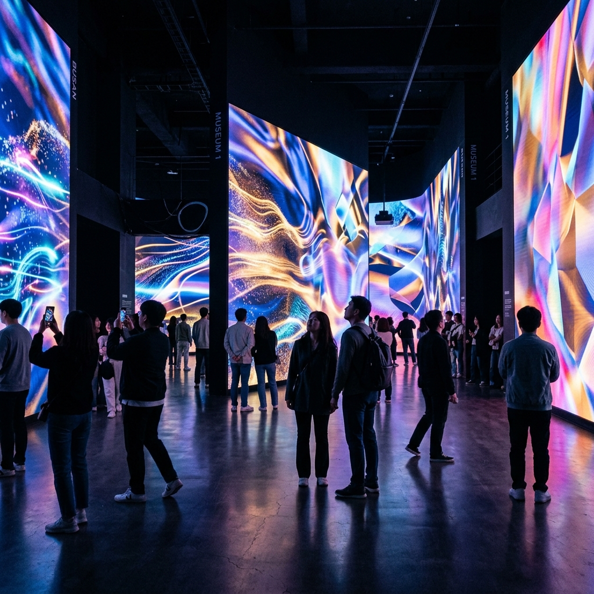

行程時間表
09:00 - 10:15
Museum 1 現代美術館 VBP 壓線
提早出門，我們要趕在 11:00 VBP 失效之前，優雅地刷過閘門入場看展，把通行證的潛力徹底榨乾這最後一滴！

10:30 - 11:30
西面醫美戰區
搭車進入西面鬧區的 Fillstox Clinic。陪老婆一起進行院長諮詢，確認好神奇的發數跟劑量後就瀟灑離開，把剩下的華麗轉變交給專業的來，老婆安心地敷麻藥準備變美去～
12:00 - 13:30
媽媽＆舅媽＆女兒的午餐時光
帶著媽媽、舅媽和前世情人（女兒）悠閒步入西面樂天百貨美食街，挑選清淡無礙的清燉牛肉湯、韓式冷麵或是香噴噴的石鍋拌飯，在冷氣房裡吃得舒舒服服～
14:00 - 14:30
老婆的術後安心午餐｜韓式水冷麵
療程結束，會合接回老婆。兩個人單獨享用一碗冰涼、酸甜開胃的「韓式水冷麵」，因為最重要的任務就是：嚴格防止術後流汗，一切以清涼舒適為最高指導原則！
15:00 - 17:30
室內巨獸：三井大樓分流
🏃 闖關放電組 (你＆女兒)
前往 10F 玩「Running Man 體驗館」，在充滿冷氣的巨大空間內，跟女兒一起盡情揮灑汗水，室內闖關不停歇！
☕ 舒適躺平組 (媽媽＆舅媽＆老婆)
電梯直上 8F 的「Q Lounge」大型複合式咖啡廳。超舒服的沙發讓媽媽和舅媽好好休息，冷氣全開也幫老婆完美防曬，一舉兩得～
18:00 - 19:30
晚餐｜海雲台優質韓式烤肉
返回飯店周遭享受最後的豪邁烤肉之夜！我們繼續開兩爐：一爐給媽媽、舅媽和女兒烤無調味牛排骨，另一爐專心伺候辣醬五花肉。特別注意：剛做完臉的老婆必須安排坐在「遠離烤爐熱氣」的最佳 VIP 涼爽席位～
📌 貼心小提醒
今天全程都走室內行程，怕冷的人記得帶一件薄外套，百貨和咖啡廳的冷氣有時候會開很強。老婆做完療程後要避免流汗和曬太陽，大家一起幫忙挑涼爽的路線走。明天就要回家了，今晚可以整理一下戰利品和行李，最後一晚好好享受吧！